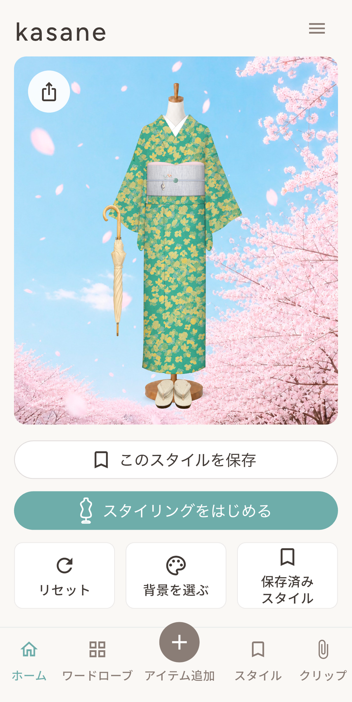
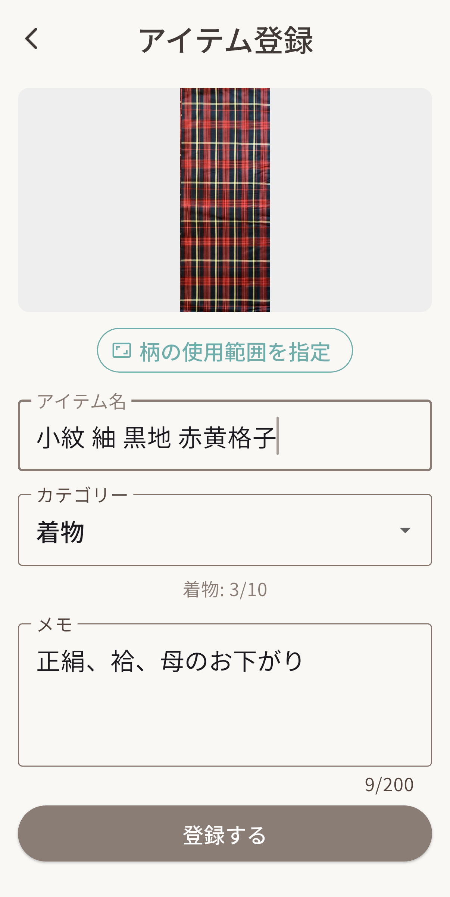
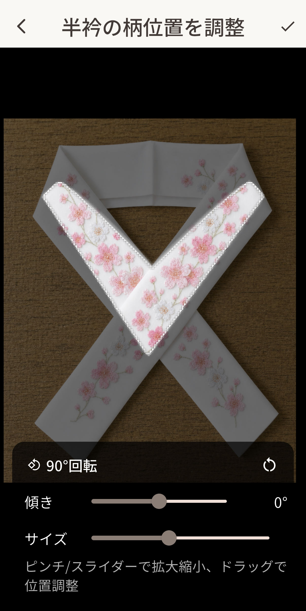
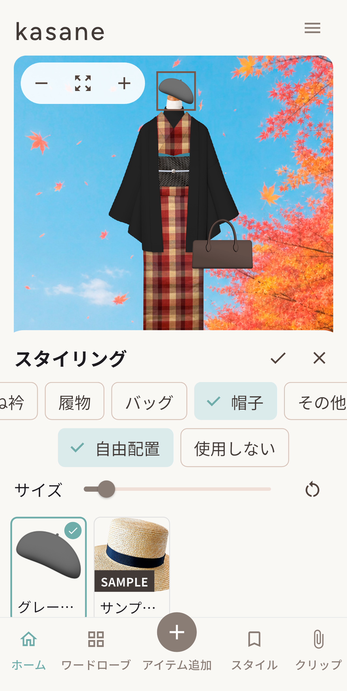
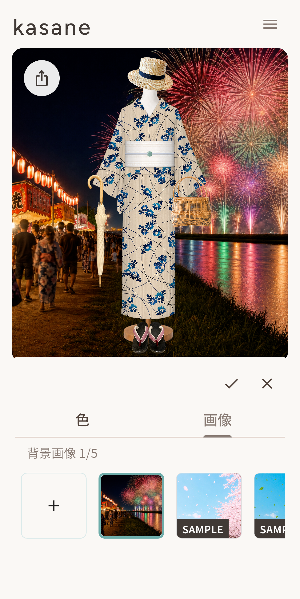
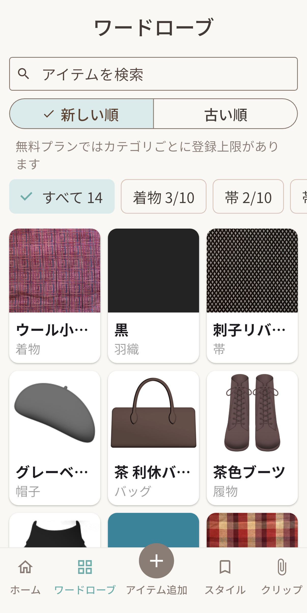
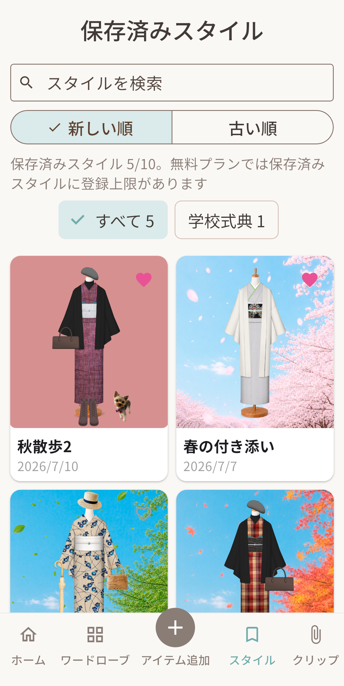
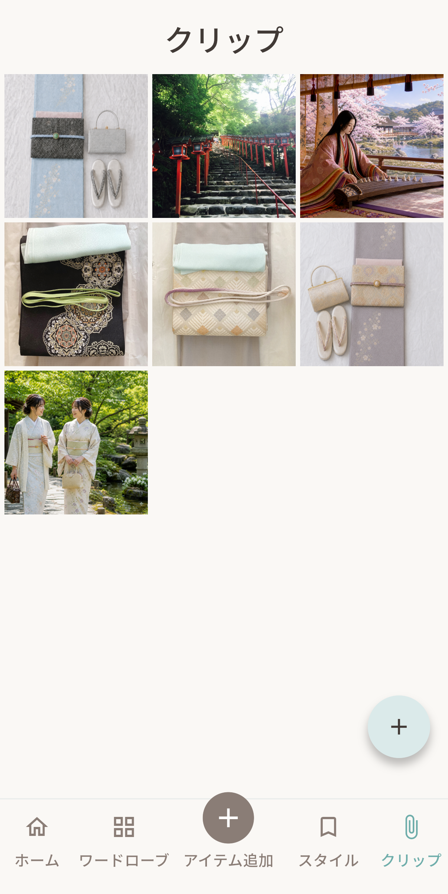
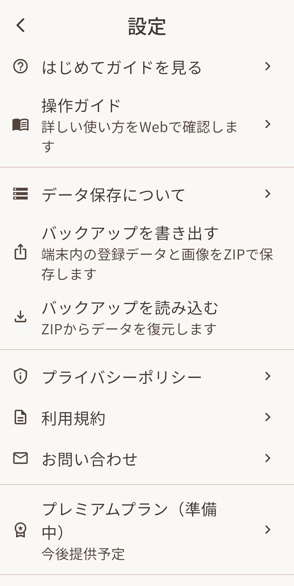

登録できるカテゴリー
着物、帯、帯揚げ、帯締め、半衿、重ね衿、羽織、帯留め、履物、バッグ、帽子、その他を登録できます。
操作サポート
アイテム登録、スタイリング、保存、バックアップなど、kasaneの詳しい使い方をご案内します。
01
現在のコーディネート（スタイル）をトルソー上で確認し、保存・背景変更・共有ができます。

02
写真やライブラリ画像、色指定からアイテムを登録できます。

着物、帯、帯揚げ、帯締め、半衿、重ね衿、羽織、帯留め、履物、バッグ、帽子、その他を登録できます。
画像を選んだ後は、「柄の使用範囲を指定」で見せたい部分を調整できます。
写真がない場合は、色のみで登録することもできます。
無料プランでは、カテゴリーごとに登録できる件数に上限があります。
現在はiOS版のみ提供しています。Android版は開発中です。
03
一部カテゴリーでは、登録時に決まった形へ切り抜いて登録できます。

04
登録済みアイテムを選び、トルソーに重ねて着姿を確認できます。

05
トルソーの背景は、背景色または背景画像から選べます。

06
登録済みアイテムをカテゴリー別に確認できます。

07
保存したスタイルを一覧で確認し、ホームのトルソーへ反映できます。

08
参考にしたいスタイル画像や写真をスクラップできます。

09
はじめてガイド、操作ガイド、起動画面、前回スタイル復元などを確認・変更できます。
